Securing SQL Server
Kevin Feasel (@feaselkl)https://csmore.info/on/securesql
Who Am I? What Am I Doing Here?


Motivation
By the end of this talk, you will have:
- A defense-in-depth mental model for SQL Server security
- Working demo scripts you can run in your own environment
- A practical checklist of hardening steps to take back to work
Agenda
- Setting Expectations
- Installation and Configuration
- Patch Management
- Data Encryption
- Connection Security
- Quick Hits
- Additional Tooling
Over the Target
Our target for this talk:
- SQL Server database administrator or infrastructure engineer
- Primarily on-premises SQL Server (with some Azure SQL Database or Managed Instance overlap)
- Some familiarity with SQL Server security concepts but not an expert
Security is a Broad Topic
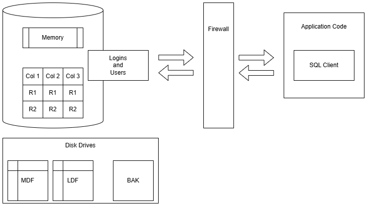
Out of Scope
This talk will not cover:
- SQL injection
- Good SQL or application development practices
- Logins, users, roles
- Permissions management
These are important topics but we will not have time to cover them in this talk.
A Narrowed Scope
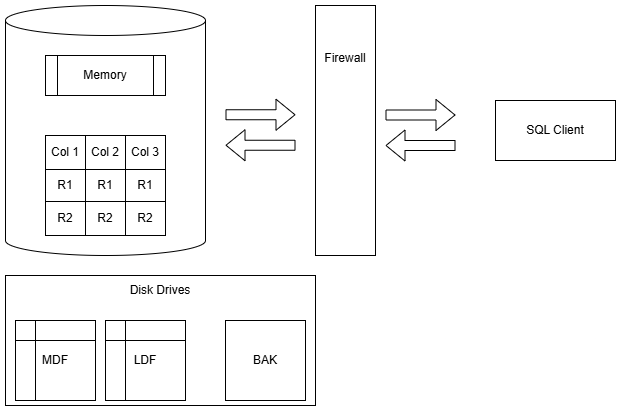
Agenda
- Setting Expectations
- Installation and Configuration
- Patch Management
- Data Encryption
- Connection Security
- Quick Hits
- Additional Tooling
Surface Area - The Basic Idea
- Do not install unnecessary components
- Turn off unnecessary services
- Disable unnecessary features
Unnecessary Components
Do you really need all of the following on your OLTP instance?
- SQL Server Reporting Services
- SQL Server Analysis Services
- SQL Server Integration Services
- SQL Server Machine Learning Services
- SQL Server client tools (Management Studio)
These are very useful products and tools, but if this instance doesn't need them, don't install them! An attacker can't exploit a product that isn't installed.
More Unnecessary Components
Do not install sample databases on production instances. Examples include:
- Wide World Importers
- AdventureWorks
- Contoso
- Northwind
If you don't need a database for production, don't make it available! -- STIG V-40943
Turn Off Services
If you do not need a service, turn it off. Attackers cannot take advantage of disabled services as an entry point for an attack.
Examples of services you may not need:
- SQL Server Browser - Needed for named instances with dynamic ports.
- SQL Server VSS Writer - Needed to copy data files while SQL Server is running (e.g., third party file copy tools).
What About xp_cmdshell?
Some people argue that you should disable xp_cmdshell because attackers can use it to run commands on the underlying Windows server.
Disabling xp_cmdshell is bad advice. By default, xp_cmdshell is available only to sysadmins. Therefore, for an attacker to use xp_cmdshell, that attacker must be a sysadmin. And sysadmins can re-enable xp_cmdshell at will!
Service Accounts
YOUR SERVICE ACCOUNT DOES NOT NEED DOMAIN ADMIN RIGHTS!
If your SQL Server machine gets compromised, the best case scenario is that an attacker has no rights outside of SQL Server.
In practice, SQL Server instances need some rights (especially for features such as Filestream/Filetable) and granting those rights is fine. But there is never a requirement to be Domain Admin.
The Principle of Least Privilege: give the fewest rights necessary.
Virtual Accounts
Windows Server 2008 R2 and SQL Server 2012 introduced the concept of virtual accounts: non-domain pseudo-accounts which have permissions on the local machine.
If you need to grant additional rights to virtual accounts, you can do this by changing permissions on the machine account in Active Directory.
Ex: for a server named PRODSQL, modify the PRODSQL$ machine account in AD
Service Accounts
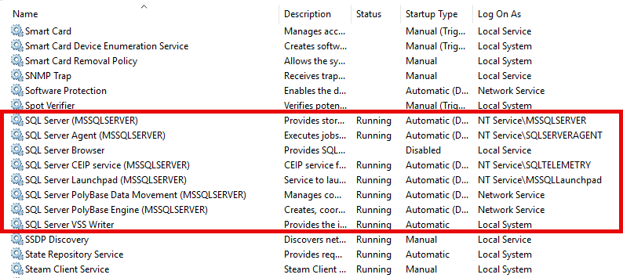
When Not To Use Virtual Accounts
You cannot use a virtual account on a cluster. You do need a valid domain account for clustered services.
Virtual accounts are not necessary to be secure; regular domain accounts work fine. But virtual accounts enforce separation between servers: an attacker who compromises one instance only has rights to that instance, not every instance on your domain.
Group Managed Service Accounts (gMSA)
gMSAs require you to create an AD security group and add computer objects to the security group. Then, create the gMSA and specify the security group to link.
The upshot is that your service account can be the same across any failover cluster nodes, and you do not need to manage passwords like a regular domain account.
Microsoft Entra ID
If you are using Azure SQL Database or Managed Instance, you cannot use Active Directory for logins. You must use Microsoft Entra ID.
If you have SQL Server on an Azure VM or are using an Azure Arc-enabled SQL Server VM, you can use Entra ID for authentication. This includes managed identity authentication, meaning you can eliminate password-based service accounts even outside of Azure.
Disable Named Pipes
Use Configuration Manager to disable Named Pipes.
- Local services (like SSIS) can use Shared Memory
- Applications should connect via TCP/IP
- Named Pipes is a NetBIOS holdover you almost certainly don't need
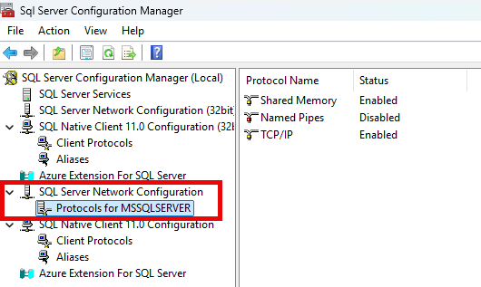
What About Non-Standard Ports?
Some people argue you should change SQL Server's default port (TCP 1433). This is not bad advice, but provides limited benefit on its own. An attacker can still find your port with a simple port scan.
This could be useful in conjunction with honeyports, a topic outside the scope of this talk.
Contained Databases
A contained database is one that is isolated from other databases and from the SQL Server instance that hosts it. Users authenticate directly to the database rather than at the instance level.
This reduces attack surface in two ways:
- Eliminates dependency on instance-level logins, reducing the value of compromising the instance
- Makes databases more portable, so you can move them between instances without re-creating logins
Enable with sp_configure 'contained database authentication', 1.
Agenda
- Setting Expectations
- Installation and Configuration
- Patch Management
- Data Encryption
- Connection Security
- Quick Hits
- Additional Tooling
The Microsoft Servicing Model
Microsoft has a 10-year servicing model for SQL Server versions. This includes:
- 5 years of mainstream support, with security fixes, regular bugfixes, and occasional added functionality
- 5 years of extended support, with security fixes and critical bugfixes
- Up to 3 years of additional support for critical security issues. Requires additional payment
The Microsoft Servicing Model in Practice
Support end dates for recent versions of SQL Server:
| Version | Mainstream Support | Extended Support |
|---|---|---|
| 2025 | January 6, 2031 | January 6, 2036 |
| 2022 | January 11, 2028 | January 11, 2033 |
| 2019 | January 8, 2030 | |
| 2017 | October 12, 2027 | |
| 2016 | July 14, 2026 |
SQL Server Patching
Older versions of SQL Server had Service Packs (SPs). Since SQL Server 2017, we have had Cumulative Updates (CUs) but no SPs.
CUs are released approximately every 2 months, with the latest CU containing all fixes from previous CUs. You can apply a CU to an instance without needing to apply previous CUs.
Microsoft also releases occasional General Distribution Releases (GDRs) for critical security issues. These are not cumulative and you must apply the GDR to the specific version of SQL Server that you are running.
Know Your Build
The SQL Server Versions website (sqlserverversions.com) keeps track of each build of SQL Server, going back to 6.0.
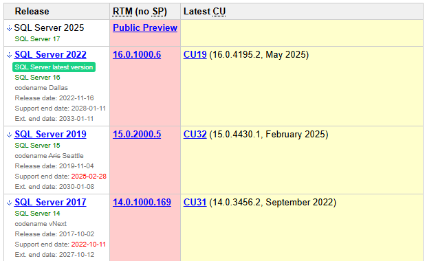
Know Your Build
To find your version of SQL Server, run the command SELECT @@VERSION.
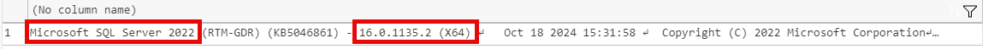
Know Your Build
Compare it to the website to see if your version is behind on important fixes, like this one is.
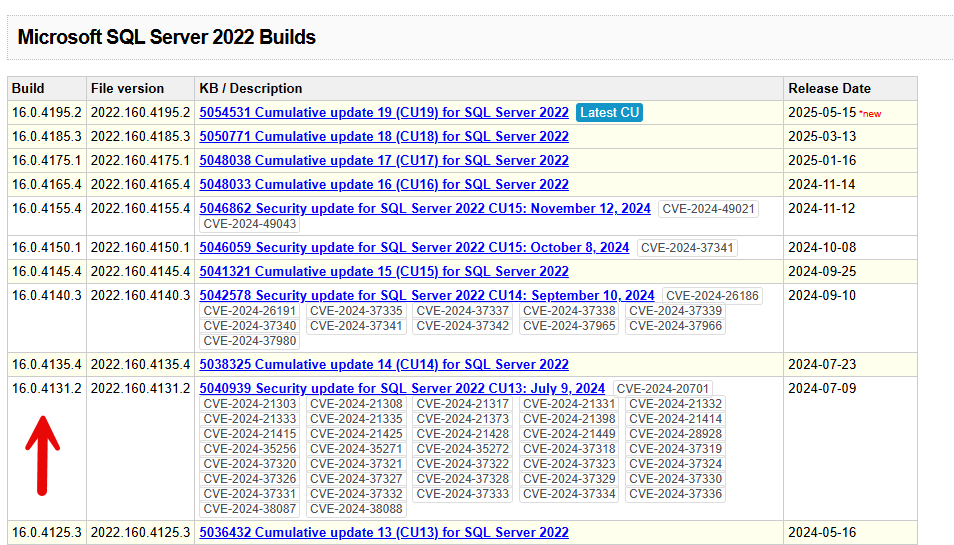
How Frequently Should I Patch?
Your corporate policy will likely dictate how frequently you need to patch SQL Server.
Generally, SQL Server CUs are safe to install, but occasionally, new bugs pop up. Some of these bugs are show-stoppers, to the point that Microsoft has withdrawn several CUs, including two in SQL Server 2019.
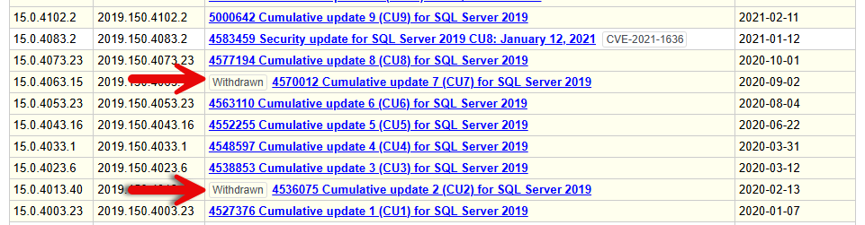
How Frequently Should I Patch?
You can also review patch notes to see what they include and what known bugs are still in them.
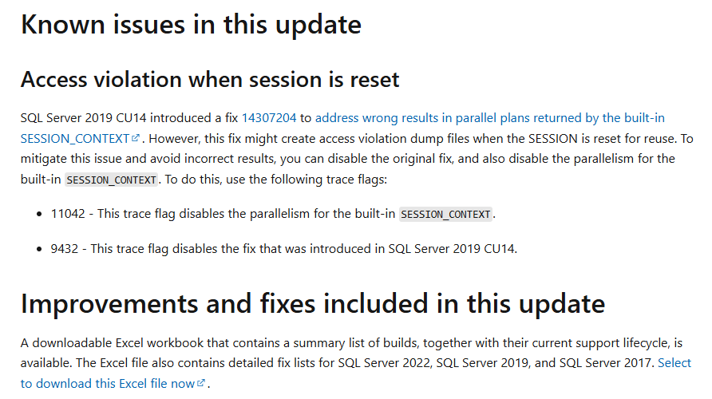
A Practical Patching Strategy
- Wait 2-3 weeks after a CU release before applying. This gives the community time to find showstopper bugs.
- Check sqlserverversions.com and the SQL Server release blog for known issues.
- Apply the CU in a non-production environment first and run your test suite.
- Apply the CU in production during a scheduled maintenance window.
- For GDRs (critical security patches), apply as soon as feasible after testing.
Agenda
- Setting Expectations
- Installation and Configuration
- Patch Management
- Data Encryption
- Connection Security
- Quick Hits
- Additional Tooling
Transparent Data Encryption
Transparent Data Encryption
Transparent Data Encryption (TDE) is a feature in SQL Server that encrypts data at rest, meaning data stored on disk. It does not encrypt data in memory or data being sent over the network.
TDE is available in Enterprise and Standard versions of SQL Server, as well as Azure SQL Database and Azure SQL Managed Instance.
TDE does protect data in backups automatically, and you will need the correct certificate installed on an instance if you want to restore that data.
TDE introduces a small but noticeable (~5%) performance hit.
Demo Time
When To Use TDE
TDE can be useful as one part of a security strategy, but you can bypass TDE on its own. It also incurs a non-zero performance penalty, which might be too much for busy transactional systems.
Because TDE also encrypts tempdb, all databases tend to take a performance hit, even databases without TDE configured.
Transparent Data Encryption
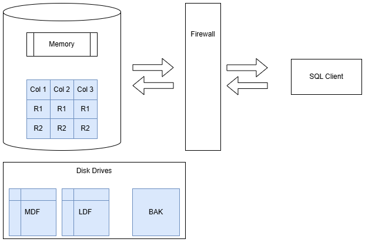
Full-Disk Encryption
If you use a full-disk encryption solution such as BitLocker, you will get most of the benefits of TDE without as much CPU overhead.
It does not encrypt backups, however, so if you copy your backups elsewhere, they will not be protected.
Full-Disk Encryption
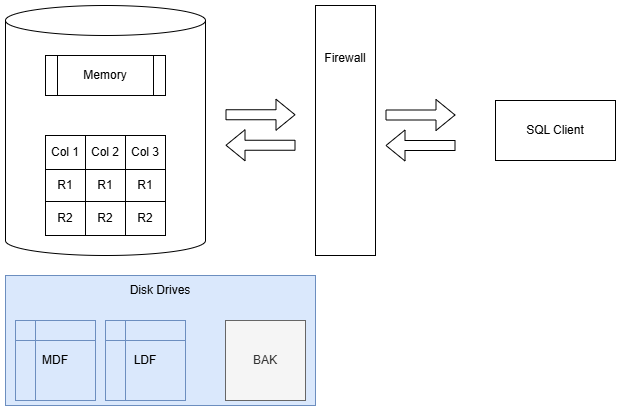
Backup Encryption
SQL Server 2014 gave us native backup encryption. This is available in Standard Edition.
Backup encryption uses AES (128, 192, or 256 bit key lengths) and requires a certificate or asymmetric key be available for encryption.
Demo Time
Backup Encryption - When to Use
Almost always. You can combine encryption with backup compression and the backup engine is smart enough to compress first.
The exception: if you have a third-party data de-duplication engine which stores your database backups, you will likely lose de-dupe benefits.
Backup Encryption
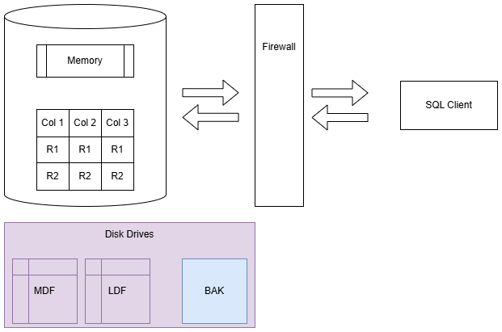
Column-Level Encryption
SQL Server also supports column-level encryption (also known as cell-level encryption). This allows you to encrypt specific columns in a table, rather than the entire database.
This is best for data that you need to secure, need to see in plaintext, and will not be part of a WHERE clause.
Demo Time
Column-Level Encryption Considerations
- Data must fit within VARBINARY(8000)
- Indexes are also encrypted, so scans will be expensive
- Encryption and decryption are relatively CPU-intensive operations
Column-Level Encryption
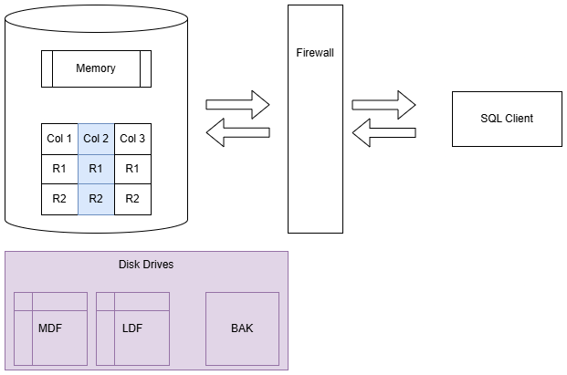
Row-Level Security
SQL Server supports segmenting records in a table based on user permissions.
It is available in any edition of SQL Server since 2016 SP1.
Demo Time
Row-Level Security Considerations
- Insert statements are not protected.
- Queries now introduce a table-valued function which runs each time. This can be a significant performance drag.
- Side-channel attacks can give users an idea of what data is available, even if they can’t see the data itself.
Row-Level Security - When to Use
- Need to segment user access within a table
- Can afford the performance hit of running a table-valued function on queries
- Moderate number of transactions (e.g., warehouse vs busy OLTP system)
Row-Level Security
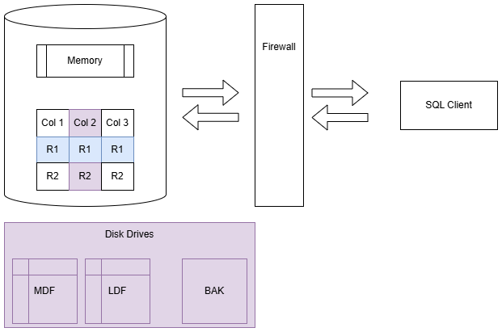
Always Encrypted
Always Encrypted protects sensitive columns from everyone, including sysadmins. Only applications with the private key can decrypt the data.
This replaces "roll your own" application-side encryption with a built-in, transparent solution. The application doesn't need custom encrypt/decrypt logic.
Deterministic and Randomized Encryption
Deterministic encryption guarantees the same encrypted value for any plain-text value.
Randomized encryption randomizes encrypted values, making it impossible to perform reversal attacks based on frequency.
Deterministic and Randomized Encryption
| Operation | Deterministic | Randomized |
| JOIN | Yes | NO |
| DISTINCT | Yes | NO |
| GROUP BY | Yes | NO |
| WHERE | Equality Only | NONE |
Demo Time
Performance on the Client
The primary performance hit will be on your client side, as encryption and decryption happens there.
Because you are sending VARBINARY over the network, you will likely have more data transfer. Also, Always Encrypted may require additional database hits to retrieve metadata needed for queries.
Secured Enclaves
Secured enclaves allow you to perform operations on encrypted data without decrypting it first, including pattern matching, range comparisons, sorting, and joins.
SQL Server 2019 introduced this with Virtualization-Based Security (VBS) enclaves and Host Guardian Service (HGS) attestation.
Performance Implications
There is very little good information on Always Encrypted performance, with most articles either out of date or very limited in scope.
Expect some minor performance impact on insert and update operations, and your major performance hit will come if you retrieve and decrypt data for a large number of rows.
Secure enclaves can help with that performance, though it will not be as fast as plaintext operations and will consume some server CPU.
Always Encrypted - When To Use
Use Always Encrypted to protect sensitive data which even database administrators should not be allowed to view.
If users need to be able to perform point lookups on data, use deterministic encryption instead of randomized encryption.
Focus on specific columns rather than encrypting everything.
Always Encrypted
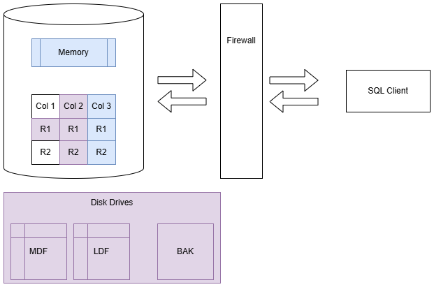
Agenda
- Setting Expectations
- Installation and Configuration
- Patch Management
- Data Encryption
- Connection Security
- Quick Hits
- Additional Tooling
Firewalls
Firewalls are critical for preventing unwanted traffic from accessing critical devices.
Firewalls can be hardware-based (e.g., a firewall appliance) or software-based (e.g., Windows Firewall).
We can use them to allow or deny traffic based on IP address, port, protocol, and other criteria.
Perimeter and On-Device Firewalls
There are two major strategies around firewalls: perimeter firewalls and on-device firewalls.
In corporate environments, you typically see perimeter firewalls: the outside world is scary and inside the boundaries is fine.
In cloud (or zero-trust) environments, you often see on-device firewalls in order to provide finer-grained access to specific cloud services.
Firewalls on my SQL Server Machine?
Firewalls consume some resources and most DBAs aren't firewall experts. In practice, Windows Firewall is often disabled on SQL Server hosts.
For Azure SQL Database, always keep the firewall on. Full public access to your instance is almost never acceptable.
Subnets, VLANs, and VNets
Control which machines can reach SQL Server by segmenting your network:
- On-premises: subnets and VLANs
- Azure: VNets and Network Security Groups
The idea is simple: only approved machines (e.g., your app servers) can talk to SQL Server.
Outbound Traffic
SQL Server rarely needs outbound internet access. Keep it isolated where possible.
Exceptions: REST APIs (if using them) and patching. Plan how you will deliver CUs to an isolated server.
Firewalls
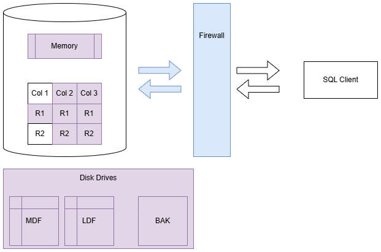
TLS Encryption
TLS certificates encrypt connections between clients and SQL Server, protecting data in transit. Without TLS, an attacker with network access can sniff packets and read your data.
There are two viable certificate options available:
- Self-signed certificate (ONLY FOR TESTING!)
- Enterprise authority-generated certificates
Using an EA to generate certificates is outside the scope of this talk.
Demo Time
TLS Setup: Verify in SSMS

TLS 1.3 in SQL Server 2025
SQL Server 2025 adds support for TLS 1.3, which provides:
- Faster handshakes (1-RTT vs 2-RTT)
- Removal of obsolete cipher suites (RC4, 3DES, SHA-1)
- Improved forward secrecy by default
SQL Server 2025 also enhances strict connection encryption mode, which forces TDS 8.0 with TLS handshake before any SQL Server communication occurs.
TLS Encryption
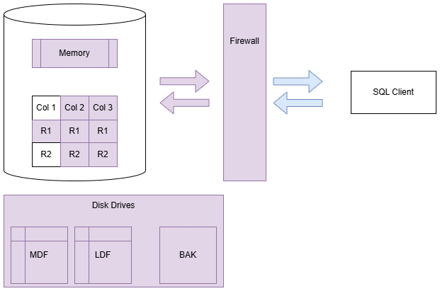
Agenda
- Setting Expectations
- Installation and Configuration
- Patch Management
- Data Encryption
- Connection Security
- Quick Hits
- Additional Tooling
Data Discovery and Classification
SQL Server has built-in capabilities around data discovery and classification. The purpose of this is to track sensitive data in your databases, not to limit access to that data.
You can classify columns via the SSMS UI, but starting with SQL Server 2019, you can also use T-SQL, which is repeatable, scriptable, and works on Linux.
Demo Time
Microsoft Purview Information Protection
Microsoft Purview can classify data across your SQL Server estate. Sensitivity labels flow downstream: Power BI automatically inherits them in reports.
Auditing
SQL Server Audit tracks events and writes them to a file, the Security log, or the Application log. Useful for tracking reads and writes to sensitive data.
Keep audits narrow in scope. Broad auditing can noticeably slow down busy servers.
Module Signing
Module signing lets you grant fine-grained permissions to stored procedures, triggers, and assemblies. Users can perform specific operations without needing direct access to the underlying objects.
More information is available at modulesigning.info.
Ledger Tables
Ledger tables preserve a cryptographically verifiable history of all data changes. This is useful for forensic analysis and regulatory auditing.
Two ledger options are available on tables: append-only or updatable.
SQL Server also has a ledger verification process to ensure that nobody has tampered with the cryptographically secure hashes.
Is Ledger What You Need?
- Ledger databases cannot be converted back to non-ledger databases
- Non-ledger tables cannot be converted to ledger tables later
- You cannot delete old data from append-only ledger tables or from the history of updatable ledger tables
- It is difficult to change ledger tables once you have created them
- A variety of SQL Server capabilities either will not work or only partially work (e.g., In-Memory OLTP, partition switching, change tracking or change data capture on history tables, transactional replication)
Ledger in SQL Server 2025
SQL Server 2025 expands ledger capabilities:
- Expanded compatibility: fewer restrictions on feature interactions, making ledger viable in more production scenarios
- Azure Confidential Ledger integration: store tamper-proof digests in Azure Confidential Ledger for independent verification
- Concrete use case: financial audit trails where regulators require cryptographic proof that historical records have not been altered post-fact
A Word on Dynamic Data Masking
Dynamic Data Masking (DDM) obscures data in query results for users who do not have the UNMASK permission. It is not a security feature.
- Any user with ad-hoc query access can reverse most masks with simple techniques (e.g., casting, SUBSTRING, inequality comparisons)
- DDM does not encrypt or protect the underlying data in any way
- It is a convenience feature for limiting casual exposure, not a defense against determined users
If you need to protect data from users who can query the database, use column-level encryption or Always Encrypted instead.
Agenda
- Setting Expectations
- Installation and Configuration
- Patch Management
- Data Encryption
- Connection Security
- Quick Hits
- Additional Tooling
Vulnerability Assessment
Microsoft Defender for Cloud includes a variety of common vulnerability checks for the SQL Server family of products.
This feature requires that you use Azure SQL Database, Azure SQL Managed Instance, SQL Server on an Azure virtual machine, or SQL Server on an Azure Arc-enabled server.
Vulnerability Assessment
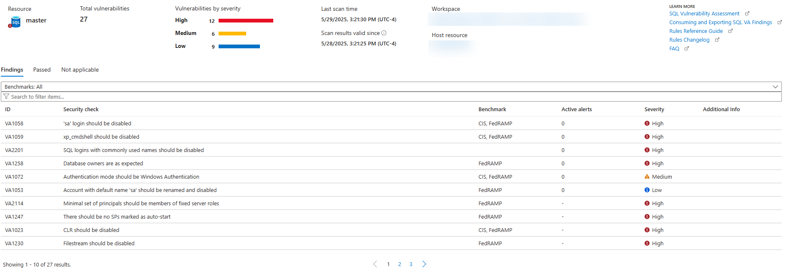
dbachecks
dbachecks is a testing library for SQL Server configuration, built in PowerShell on top of the Pester framework.
It includes a variety of checks for SQL Server configuration, including security checks following the CIS framework.
sp_CheckSecurity
sp_CheckSecurity is a stored procedure that Straight Path Solutions offers for performing a variety of security checks.
It focuses on instance- and database-level settings but is not a full implementation of CIS or STIGs recommendations.
Wrapping Up
Today you got:
- A defense-in-depth view of the SQL Server security surface
- Live demos and scripts you can run in your environment
- A hardening checklist to take back to work
This is a starting point. Combine it with permissions management and secure application development for a complete security posture.
Bring Back to Your Environment
A hardening checklist is available in the repository:
csmore.info/on/securesql → CHECKLIST.md
It covers everything from today's talk, plus additional steps we didn't have time for (permissions review, sa account, SQL injection prevention, DR planning, and more).
Wrapping Up
To learn more, go here:
https://csmore.info/on/securesql
And for help, contact me:
feasel@catallaxyservices.com | @feaselkl
Catallaxy Services consulting:
https://CSmore.info/contact